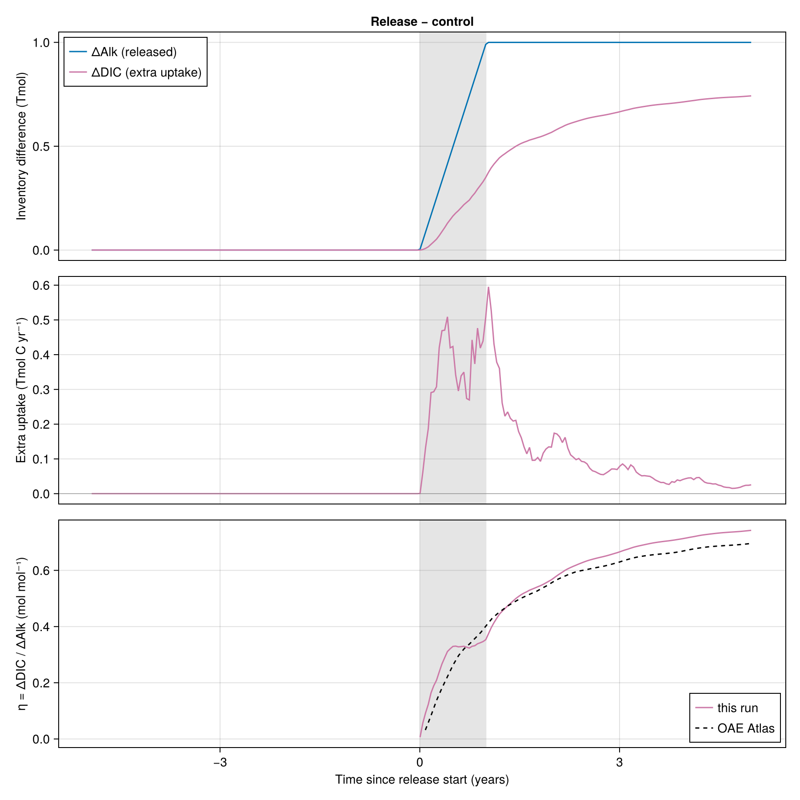

Alkalinity release at the mouth of the Amazon
This example releases 1 Tmol of alkalinity over one year at the mouth of the Amazon following the OAEMIP protocol, in the $1\degree$ configuration with MITgcm-style DIC biogeochemistry and repeat-year (1990) JRA55 forcing. The release starts after 5 years and the run is 10 years long.
It needs a GPU and the forcing, restart and BGC data (see Forcing data), so it is not run when the documentation is built; the figures below are from a run on Bouchet.
Packages
using NumericalOcean
using NumericalEarth
using Oceananigans
using Oceananigans.Units
using OceanBioME
using Dates
using CUDAGrid
The nominally $1\degree$ eORCA1 tripolar grid on the GPU.
arch = GPU()
grid = ORCA1(arch)Biogeochemistry
Light comes from the shortwave radiation in the atmosphere component, attenuated through the chlorophyll climatology (this model does not prognose phytoplankton).
surface_PAR = PARFromShortwave(grid)
light_attenuation = PrescribedAttenuationPAR(grid, surface_PAR;
attenuation = PrescribedChlorophyllAttenuation(first_color_fraction = 0.0),
attenuation_discrete_form = true)Productivity is implicit, as in the MITgcm DIC package. CarbonateSystem(2) carries two independent copies of the carbonate tracers (DIC1, Alk1, DIC2, Alk2); we release alkalinity into Alk2 only, so Alk2 - Alk1 and DIC2 - DIC1 are the perturbation.
plankton = ImplicitProductivity(; maximum_community_productivity = 9.0 / 360days, # mmol P / m³ / s
light_half_saturation = 30.0, # W / m²
carbon_ratio = 117.0) # mol C / mol P
biogeochemistry = MITgcmDIC(grid;
plankton,
light_attenuation,
inorganic_carbon = CarbonateSystem(2),
open_bottom = false,
implicit_sinking = true,
store_flux = true)Atmospheric $pCO₂$ is the 1990 Mauna Loa monthly record, repeated every 365 days to match the forcing.
pCO₂ = MaunaLoaCO₂(arch; dates = DateTime(1990, 1, 15):Month(1):DateTime(1990, 12, 15),
start_date = DateTime(1990, 1, 1),
period = 365days)Alkalinity release
1 Tmol (1000e12 mmol) of alkalinity released over a year at the mouth of the Amazon (49.5°W, 0°N), starting after 5 years. The footprint is Gaussian with a 250 km standard deviation, cut off at 3 standard deviations, in the surface cells only.
alkalinity_release = GaussianInjection(grid, (-49.5, 0), 5 * 365days)Simulation
backend_size = 2920 loads the whole repeat year of JRA55 (3-hourly) into GPU memory.
simulation = forced_ocean_simulation(grid;
biogeochemistry,
atmosphere_tracers = (; pCO₂),
forcing = (; Alk2 = alkalinity_release),
jra55_dataset = RepeatYearJRA55(),
start_date = DateTime(1990, 1, 1),
backend_size = 2920,
stop_time = 10 * 365days)Start from the spun-up physics on (or near) 1 January; the biogeochemical tracers keep their UnifiedBGC initial conditions.
pickup_restart!(simulation, DateTime(1990, 1, 1); start_date = DateTime(1990, 1, 1), repeat_year = true)Output and running
omip_diagnostics!(simulation; async = true, filename_prefix = "amazon_alk_release")
oaemip_diagnostics!(simulation; async = true, filename_prefix = "amazon_alk_release")
try
run!(simulation)
finally
flush_output!(simulation) # write anything still queued
endResults

This page was generated using Literate.jl.